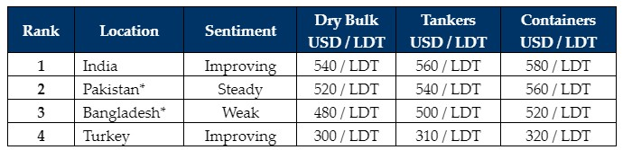

inWeekly Demolition Reports09/10/2023

After a dire summer that saw over USD 100/LDT wiped off vessel recycling prices in theIndian sub-continent ship recycling markets (and even Turkey to an extent), nearly all of the markets have enjoyed somewhat of an upward resurgence entering the fourth quarter of the year.
India has been the primary beneficiary of this recent resurgence with some stunning (container) purchases, some even approaching the USD 600/LDT mark once again. As China too entered a holiday period, Indian local steel plate prices were the only ones to have traded this week and even gain marginal ground, all while the Indian Rupee remained relatively steady against the U.S. Dollar. Demand from Alang Buyers also remains rampant pursuant to a successful G20 summit and the announcement of various infrastructure projects.
It is therefore unsurprising to see most of the tonnage head towards Alang, which remains the market of the moment with the top payers / players / performers and has been the most reliable destination for transacting L/Cs of all sub-continent markets.
Pakistan has certainly come back into the picture of late and several End Buyers have even managed to secure L/C approvals to purchase 5 – 6 (mostly Panamax sized) Bulkers. With those vessels successfully beached, Gadani subsequently endured a slight dip and cooling of local demand as bank restrictions resumed. However, as L/C approvals seemingly start to filter through once again, we can expect sales to take place into Pakistan before the year is out.
Bangladesh has been the great disappointment of late, as prices tumbled uncontrollably during the summer / monsoon months and the Chattogram market has yet to fully recover. Indeed, LC approvals are struggling once again as steel plate prices remain stranded well behind their competitors, to the extent that the BSBRA has had to temporarily halt the sale of inventory from local yards to domestic steel mills, in order to prevent underselling at these loss-making levels.
Overall, the supply of tonnage has primarily been Containers over the last month, but as Dry Bulk vessels continue to trade at less than impressive rates, we have witnessed a steady introduction of vintage Handy and Panamax Bulkers, with Capes seeming set to come as well.
For week 40 of 2023, GMS demo rankings / pricing for the week are as below.

📄 Download PDF: Ship-recycling-market-insight-week-40-2023-Q4-Resurgent.pdfSource: GMS,Inc. ,https://www.gmsinc.net/gms_new/index.php/web